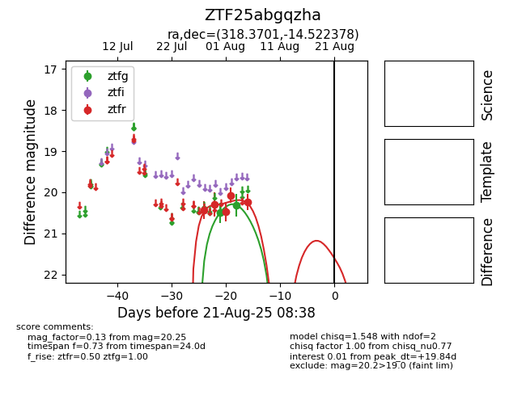

Target ZTF25abgqzha at 2025-08-21 08:38, see:
FINK: fink-portal.org/ZTF25abgqzha
Lasair: lasair-ztf.lsst.ac.uk/objects/ZTF25abgqzha
ALeRCE: alerce.online/object/ZTF25abgqzha
alt names
ZTF25abgqzha (ztf,alerce)
coordinates:
equatorial (ra, dec) = (318.3701,-14.52238)
galactic (l, b) = (35.3463,-37.93574)
photometry
last ztfg=20.31, ztfr=20.25
2 ztfg, 5 ztfr detections
